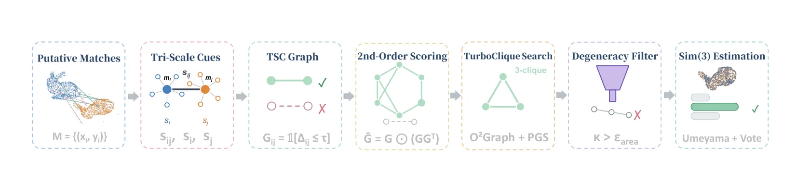
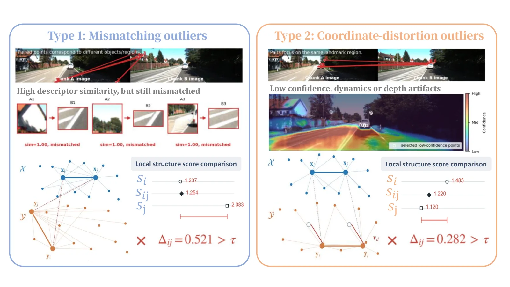

Sim(3)-TurboReg：把 TurboReg 的相容图判据换成“三尺度一致性”，90% 外点下仍只要 0.6 ms
Sim(3)-TurboReg: Robust and Efficient Scale-Aware Registration via Tri-Scale Consistency
90% 外点、未知尺度的 Stanford 配准上，它的误差与自适应 RANSAC 持平（旋转 0.483° vs 0.487°），中位耗时 0.605 ms vs 8.052 ms，低 92.5%；RANSAC-1K 在 320 次试验中失败 80 次，TEASER++ 的旋转误差达 121.3°。作为即插即用后端替换 DA3-Streaming 的分块对齐后，KITTI 平均 ATE 改善 22.2%、端到端时间降 16.6%；TUM 平均 ATE 0.0437 m 对原始 0.0492 m。消融里去掉 TSC 会造成 1280 次试验中 910 次失败，说明收益主要来自这个判据而不是求解器。
Median CPU time at 90% outliers
Rotation error at 90% outliers
KITTI ATE improvement
TUM mean ATE
作者、单位与技术谱系 · Research context
作者与单位
研究脉络
- TurboReg（ICCV 2025，Yan 等）方法基座关系：直接继承其 Ordered Graph + Pivot-Guided Search 的团搜索求解器，只替换相容图判据[论文 §III-C、参考文献 [14]]
- SC2-PCR（CVPR 2022）方法上游关系：二阶空间相容性打分被直接借用为 Ĝ=G⊙(GGᵀ)[论文 §III-B 式 (7)(8)]
- TEASER++ / Umeyama / RANSAC方法上游关系：作为稳健 Sim(3) 与闭式解的对照与组件[论文 §I、§IV-A 表 I]
- Sim(3)-TurboReg 本篇推进本篇推进关系：用三尺度一致性把图方法从 SE(3) 推到 Sim(3)，并做流式系统集成[论文摘要与代码链接]
合作网络
- 武汉大学 ↔ 萨拉戈萨大学Wuhan University → University of Zaragoza关系：共同署名（双单位）[论文首页署名]
- Sim(3)-TurboReg ↔ TurboRegSim(3)-TurboReg（Zhou/Yan/Li 等） → TurboReg（Yan, Shi, Zhao, Wang, Cao, Wu, Li, ICCV 2025）关系：同团队前作 + 技术依赖（求解器）[论文参考文献 [14] 与作者列表]
- Sim(3)-TurboReg ↔ 官方代码论文 → https://github.com/ivan-zzj/Sim3-TurboReg关系：官方代码发布[论文摘要代码链接]
作者、同等贡献与通讯作者标注来自论文首页脚注；机构按作者行整体记录，不逐人推断。TurboReg 的共同作者关系可在参考文献 [14] 核对，代码仓库由摘要给出。
方法本质拆解 · What actually changed
是不是微调？
不训练，纯测试时几何算法：没有任何可学习权重，输入是候选对应点对，输出是一个 Sim(3) 变换。所有参数（τ、k、d_min、τ_in、pivot 数）都是手工设定或按数据集选择的超参，作者明确说 τ 与 k 是数据集级旋钮，而不是逐序列调参。
有没有额外约束？
约束集中在“相容性”上：三个对数尺度（边、两端节点）的极差必须 ≤τ 才允许连边；距离过近的点对（‖x_i−x_j‖<d_min）被剔除，避免小分母放大噪声；近共线三元组因 κ≤ε_area 被丢弃，保证尺度可解。没有用任何运动模型、IMU 或语义先验，也没有对尺度设上下界；因此它对“尺度先验错误”没有防护，只能靠对应本身的一致性。
推理/后端到底做了什么？
推理是确定性的组合搜索：建图 → 二阶打分 → pivot 引导的团搜索 → 退化过滤 → 每组 Umeyama 闭式解 → 全集合内点投票，没有迭代重加权，也没有全局 BA。计算量主要由建图的 O(N²) 边检查与团搜索的 O(K₁N) 决定；因为外点在图构造阶段就被剪掉，外点率升高反而让后续搜索更便宜，这与 RANSAC 的“外点越多越慢”相反。
方法本质是什么？
本质是把“尺度”从一个待估参数变成一种可局部验证的几何证据：如果一组对应真的来自同一个相似变换，那么它们两两之间的尺度比、以及各自邻域内的尺度共识应该同时一致，三者不一致就说明至少有一个点被扭曲。它没有做的是估计外点的结构（动态物体、深度伪影的具体模型），也没有利用时间连续性；判据是纯几何的、逐帧独立的。
输入是带外点的 3D-3D 候选对应；改变的位置是相容图的连边判据（绝对距离 → 三尺度一致）；约束动作是双 log 极差阈值 + 二阶支持 + 退化过滤 + 内点投票；直接效果是 Sim(3) 配准在 90% 外点下达到 RANSAC 精度而耗时降两个数量级。

结论与问题Conclusion & Motivation
核心结论
这篇论文的结论很窄但很硬：把 TurboReg 的相容图从“绝对距离一致”改成“边尺度 + 两端局部尺度三者一致”，就能在保持组合式求解器速度的同时处理 Sim(3) 尺度未知问题。在 90% 外点、未知尺度的 Stanford 配准上，它和跑满 1 分钟的自适应 RANSAC 精度相同（旋转 0.483° vs 0.487°），但中位耗时 0.605 ms vs 8.052 ms。作为后端替换后，DA3-Streaming 在 KITTI 上平均 ATE 改善 22.2%、端到端时间降 16.6%，TUM 上 ATE 从 0.0492 m 降到 0.0437 m。
动机与问题
前馈 3D 基础模型的联合注意力显存随输入长度平方增长，几百帧就会 OOM，工程上的通用解法是滑窗分块；但每块在自己坐标系里重建，尺度不受约束，标准 SE(3) 配准（依赖绝对距离保持）直接失效。现有稳健 Sim(3) 方案各有短板：TEASER++ 可认证但精度/耗时随外点率退化，RANSAC+Umeyama 需要海量迭代且不保证确定性，图方法（TurboReg、SC2-PCR、MAC）鲁棒高效却只针对 SE(3)。作者还指出流式系统里的外点有两种：身份错配（Type 1）和“身份正确但坐标被动态/深度伪影扭曲”（Type 2），后者对只检查边尺度的判据几乎不可见。
方法Method
方法总览
流程是四步：先为每条对应算边尺度 s_ij=‖y_i−y_j‖/‖x_i−x_j‖；再为每个点算节点尺度——在源侧与目标侧各取 k 近邻、取并集，把邻域内所有成对尺度比取中值（不是先取中值距离再相除）；然后用三者的对数极差 Δ_ij 建相容图，Δ_ij≤τ 才连边；接着做二阶共享邻居打分 Ĝ=G⊙(GGᵀ)，用 TurboClique 的 pivot 搜索提三元组，剔除近共线（归一化面积 κ≤ε_area）的退化组，每组用 Umeyama 闭式解生成 Sim(3) 假设，最后按全集合内点数投票选最优。
关键技术细节
节点尺度是全文的关键设计：它把“这个点周围的局部尺度”变成可观测量，因此当动态物体造成成片一致位移时，边尺度 s_ij 可能仍然合理，但两端节点尺度会被混合邻域拉偏，从而暴露畸变。作者给出近似关系 δ_ab≈(‖v_d‖/(s* r_ab))|cosθ|，即位移越大、局部半径越小越容易被检出。第二个细节是退化检查：Sim(3) 多一个尺度自由度，近共线三元组会让尺度估计病态，因此用尺度不变的正规化面积 κ 过滤。默认参数：CPU 实验 k=10、τ=0.1、d_min=1e-3、τ_in=0.08、32 个 pivot；系统级实验 KITTI 默认 τ=0.25、TUM 默认 τ=0.20，k 默认 10/20（表 V），说明 τ 与 k 是数据集级旋钮而不是逐序列调参。

实验Experiments
实验设置
核心配准：Stanford 四个模型（Bunny、Armadillo、Dragon、Buddha），每次采 N=100 个顶点、源点云归一化到单位半径，尺度 s*~U[1,5]、Haar 均匀旋转、平移在单位球内，噪声 σ=0.01 并截断到 5.54σ；外点比例 60–90%，每个（模型, 比例）40 次试验、两个种子，共 320 次/比例、1280 次输入。指标：尺度误差 e_s、旋转误差 e_R（度）、平移误差 e_t，以及单线程 CPU 中位耗时；无解记为失败。对照：TEASER++、RANSAC-1K（1000 次迭代上限）、RANSAC-1min（自适应置信停止、60 s 预算）、FGR 的 Sim(3) 改版（作者自实现）。系统级：把 VGGT-Long、Pi-Long、DA3-Streaming 的跨块对齐后端替换成本方法，前端与回环不动，在 KITTI 与 TUM RGB-D 上比 ATE 与端到端时间（i7-13700KF + RTX 4090）。
实验数字与比较
90% 外点（表 I）：本方法 e_s/e_R/e_t = 0.0074 / 0.483° / 0.0132，0.605 ms；RANSAC-1min 为 0.0074 / 0.487° / 0.0133，8.052 ms；TEASER++ 为 41.84 / 121.33° / 26.75，0.922 ms；FGR-Sim3 为 7.48 / 113.08° / 6.82。80% 外点：本方法 0.0049 / 0.314° / 0.0085，TEASER++ 的尺度误差已到 14.31；60% 外点：本方法 0.0032 / 0.211° / 0.0056，与 RANSAC 同级。失败率：RANSAC-1K 在 90% 外点下 320 次里失败 80 次；本方法与 RANSAC-1min 全程 0 失败。系统级（表 III–V）：DA3-Streaming 加本后端后 TUM 平均 ATE 0.0437 m（原 0.0492 m），KITTI 平均 * 13.76 m、端到端 529 s（原 634 s，降 16.6%）；摘要给出的 KITTI ATE 改善为 22.2%。检索/运行分解：耗时对-outlier率几乎不敏感（60% 时 0.70 ms，90% 时 0.61 ms），因为 TSC 在搜索前就把污染剪掉了。
消融/失败边界
CPU 消融（表 II，同一批 1280 次输入）：关掉 TSC 直接灾难，910 次失败——图几乎全连通，pivot 落在外点主导的团里，假设拿不到内点票；这条最能说明收益来自判据。节点尺度必须既稳健又局部：换成并集中值偶发 2 次失败，k=5 让旋转误差升 69%（0.536°），k=20 混入无关结构导致 1 次失败；容差风险是单边的——收紧到 τ=0.05 无损失，放宽到 τ=0.20 出现 5 次失败。后处理精修有用（去掉后 e_R 0.577°），加权版无增益；二阶打分与退化过滤在 N=100 时对结果无影响，作者说它们在流式规模（N 大两个数量级）才起作用。系统级失败边界：KITTI 对 τ、k、τ_in 远比 TUM 敏感（TUM 均值波动 <0.003 m，KITTI 最多摆动约 7 m），室外深度范围让局部尺度共识更噪；VGGT-Long 加本后端后在长序列且回环弱的情况下出现精度回退，说明后端不能弥补前端匹配偏差。
局限与迁移Limitations & Transfer
局限与待核验
作者明确承认：理论推导假设三个尺度证据“基本独立”，相关性会把抑制指数从三次拉向二次；VGGT-Long 的回退也被点名为前端匹配质量导致的边界。我们待核验：真实流式数据里 Type 2（坐标畸变）外点的比例与检出率没有单独统计，实验主要是合成均匀外点；大 N 下二阶打分与退化过滤的定量收益只在文字里说“在流式规模起作用”，没有对应表格；GPU 实现与更大规模（如 10k 对应）的耗时未知；系统级 KITTI 表中基线 DA3-Streaming（IRLS）的逐段数字在 HTML 抽取里缺失，22.2% 只能与摘要和表 V 的默认配置交叉核对。
与你研究路线的关系
可迁移模块一：把“尺度一致性”做成图相容判据，而不是事后加权。我们的多源因子（视觉深度、激光、GNSS 高程）之间也存在尺度/杠杆臂不一致，TSC 这种“边 + 两端局部”的三重检查可以直接用来给回环或跨源关联做门控。可迁移模块二：全集合内点投票 + 闭式 Umeyama 的假设选择，比 RANSAC 更确定、更省时，适合放进需要实时、可复现的验证环节。下一步实验：在我们已有的回环/重定位候选对上，用 TSC 替换现有 RANSAC-PnP 门控，比较内点率、误接受率与耗时；再人为注入 1.5° 外参偏差，看它是否像本文一样把畸变对判成外点。

